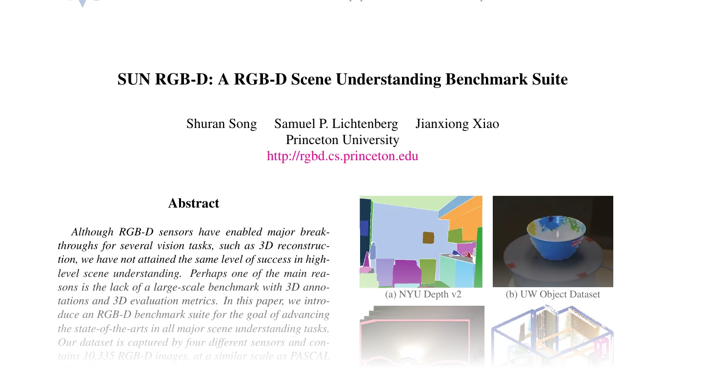

SUN RGB-D
The SUN RGB-D dataset for 3D object detection, as described in the paper SUN RGB-D: A RGB-D Scene Understanding Benchmark Suite.

Classes:
-
SunRGBD–The SUN RGB-D dataset for 3D object detection, as described in the paper
Functions:
-
rebase_sequence–Rebase an absolute SUN RGB-D scene path to a sequence id relative to
SUNRGBD/. -
decode_depth–Decode a 16-bit SUN RGB-D depth image into metric depth.
-
unproject–Unproject a metric depth map into the upright depth coordinate frame.
-
parse_boxes–Parse SUN RGB-D 3D boxes into the packed detection encoding.
SunRGBD(
root: PathLike,
*,
train: bool = True,
transform: Optional[Callable] = None,
download: bool = False,
force_download: bool = False,
force_process: bool = False,
show_progress: bool = True,
num_workers: Optional[int] = None,
)
Bases: PointCloudDataset
The SUN RGB-D dataset for 3D object detection, as described in the paper SUN RGB-D: A RGB-D Scene Understanding Benchmark Suite.
SUN RGB-D provides 10335 RGB-D frames with amodal oriented 3D bounding boxes. This dataset reconstructs the upright point cloud from the raw depth frames following the votenet recipe ( facebookresearch/votenet) and exposes per-scene clouds with their ground-truth boxes over the 10 detection classes.
The dataset reads the depth and RGB frames directly from the 6.8 GB SUNRGBD.zip release
and the metadata from SUNRGBDtoolbox.zip, without extracting either archive wholesale.
Each scene is processed into a <processed_dir>/<split>/<sequence_id>/ directory holding one .npy per
attribute; pos is stored as float16 and color as uint8 to keep the cache compact. Construction only
enumerates the cached scene directories; each scene's arrays are read from disk on access.
Cached boxes keep the on-disk \((K, 8)\) encoding (half extents, clockwise heading, trailing class
column) and the per-box classes stay in class.npy; __getitem__ converts them to the emitted \((K, 7)\)
box / \((K,)\) label format below, so existing caches stay valid.
Parameters:
-
root(PathLike) –Root directory where the dataset is stored or will be downloaded.
-
train(bool, default:True) –If
True, loads the train split; ifFalse, loads the val split. -
transform(Optional[Callable], default:None) –A callable that transforms the data when retrieved from the dataset.
-
download(bool, default:False) –Whether to download missing raw inputs if not present.
-
force_download(bool, default:False) –Whether to force the download of the raw data.
-
force_process(bool, default:False) –Whether to force the processing of the raw data.
-
show_progress(bool, default:True) –Whether to show a progress bar during processing.
-
num_workers(Optional[int], default:None) –Worker processes for preprocessing, or
Nonefor sequential processing.
Shape
pos: \((N, 3)\) point coordinates in the upright depth frame.color: \((N, 3)\) RGB values in \([0, 255]\) (uint8).box: \((K, 7)\) boxes as \([cx, cy, cz, dx, dy, dz, \text{heading}]\) with full extents and a counter-clockwise heading about \(+z\) from \(+x\).label: \((K,)\) per-box class indices.
Example
Assuming you have downloaded SUNRGBD.zip and SUNRGBDtoolbox.zip under
data/SunRGBD/raw, you can load the dataset as follows:
Methods:
-
read_split–Read the split's sequence ids from the toolbox archive.
-
read_meta–Read the per-scene metadata structs from the toolbox archive, keyed by sequence id.
-
process_scene–Unproject one scene and write its packed
pos/color/box/classarrays. -
read_scene_cloud–Unproject one scene's depth and RGB images into a colored point cloud.
Attributes:
-
release_zip_path(str) –Path to the raw
SUNRGBD.ziprelease archive. -
toolbox_zip_path(str) –Path to the raw
SUNRGBDtoolbox.ziparchive holding the splits and metadata. -
class_to_idx(Dict[str, int]) –Mapping from class name to label index.
-
processed_files(List[Path]) –Sorted list of the split's processed scene directories.
-
name(str) –Name of the dataset directory.
-
data_dir(str) –Path to the dataset directory
<root>/<name>. -
raw_dir(str) –Path to the raw download directory.
-
processed_dir(str) –Path to the processed cache directory.
property
¶
Path to the raw SUNRGBDtoolbox.zip archive holding the splits and metadata.
property
¶
Sorted list of the split's processed scene directories.
Read the per-scene metadata structs from the toolbox archive, keyed by sequence id.
Unproject one scene and write its packed pos / color / box / class arrays.
Parameters:
-
args(Tuple[str, Any, str]) –The scene's sequence id, its metadata struct, and the split directory to write into.
Unproject one scene's depth and RGB images into a colored point cloud.
Parameters:
-
entry(Any) –The scene's metadata struct, holding the image paths, the intrinsics
Kand the upright rotationRtilt.
Returns:
-
Tuple[ndarray, ndarray]–The upright points \((N, 3)\) and their RGB colors \((N, 3)\), with the zero-depth pixels dropped.
Rebase an absolute SUN RGB-D scene path to a sequence id relative to SUNRGBD/.
The split lists and metadata store absolute paths such as
/n/fs/sun3d/data/SUNRGBD/kv1/NYUdata/NYU0001, sometimes with a leading double slash.
Members inside SUNRGBD.zip are keyed as SUNRGBD/kv1/NYUdata/NYU0001/..., so the
sequence id keeps everything after the last /SUNRGBD/ segment.
Parameters:
-
path(str) –Absolute scene path or a
SUNRGBD/...sequence path.
Returns:
-
str–The sequence id, e.g.
kv1/NYUdata/NYU0001.
Examples:
decode_depth(
depth_png: ndarray,
depth_trunc: float = DEPTH_TRUNC,
depth_scale: float = DEPTH_SCALE,
) -> ndarray
Decode a 16-bit SUN RGB-D depth image into metric depth.
The raw PNG stores depth bit-shifted by 3. The value is recovered as
(d >> 3) | (d << 13) in uint16, scaled to meters and truncated at \(8\) m.
Parameters:
-
depth_png(ndarray) –Raw depth image of shape \((H, W)\) and dtype
uint16.
Returns:
-
ndarray–Metric depth of shape \((H, W)\) and dtype
float32.
Shape
- Input: \((H, W)\).
- Output: \((H, W)\).
Unproject a metric depth map into the upright depth coordinate frame.
Pixels are unprojected on a 1-indexed grid using the intrinsics k, reordered into the
depth frame as \([x, z, -y]\), then rotated upright by rtilt. Invalid (zero-depth) pixels
are kept in place here and dropped by the caller via the depth mask.
Parameters:
-
depth_m(ndarray) –Metric depth of shape \((H, W)\).
-
k(ndarray) –Camera intrinsics of shape \((3, 3)\).
-
rtilt(ndarray) –Upright rotation of shape \((3, 3)\).
Returns:
-
ndarray–Unprojected points of shape \((H \cdot W, 3)\) in row-major order, dtype
float32.
Shape
- Input
depth_m: \((H, W)\). - Output: \((H \cdot W, 3)\).
Parse SUN RGB-D 3D boxes into the packed detection encoding.
Each kept box is \([cx, cy, cz, dx, dy, dz, \text{heading}, \text{sem\_cls}]\) where the
centroid is the box center and the half-extents are the abs coeffs reordered to
\([c_1, c_0, c_2]\). This matches votenet's _bbox.npy [l, w, h] mapping (\(l = \text{coeffs}[1]\)
along the heading axis, \(w = \text{coeffs}[0]\), \(h = \text{coeffs}[2]\)); storing the raw
coeffs order swaps \(dx \leftrightarrow dy\) and collapses oriented-box AP@0.5. The heading is
\(-\text{atan2}(o_1, o_0)\) from the orientation vector, and sem_cls is the index of an exact
class-name match. Objects whose class name is not one of the 10 SUN RGB-D detection classes
are dropped.
Parameters:
-
gt(Any) –The raw
groundtruth3DBBvalue from the metadata struct. -
class_to_idx(Dict[str, int]) –Mapping from class name to integer index.
Returns:
-
ndarray–Boxes of shape \((K, 8)\) and dtype
float32(empty \((0, 8)\) when no box is kept).
Shape
- Output: \((K, 8)\).